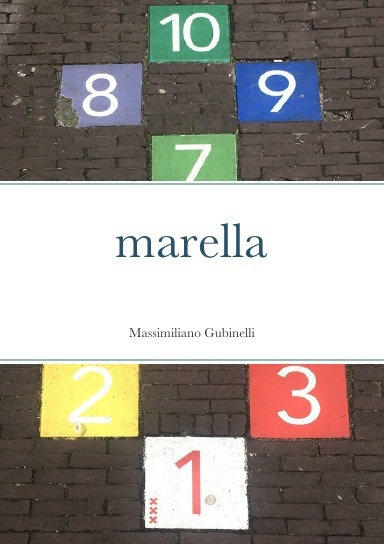
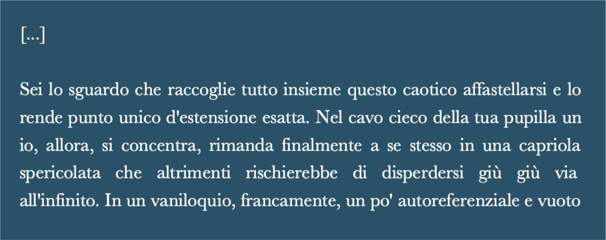
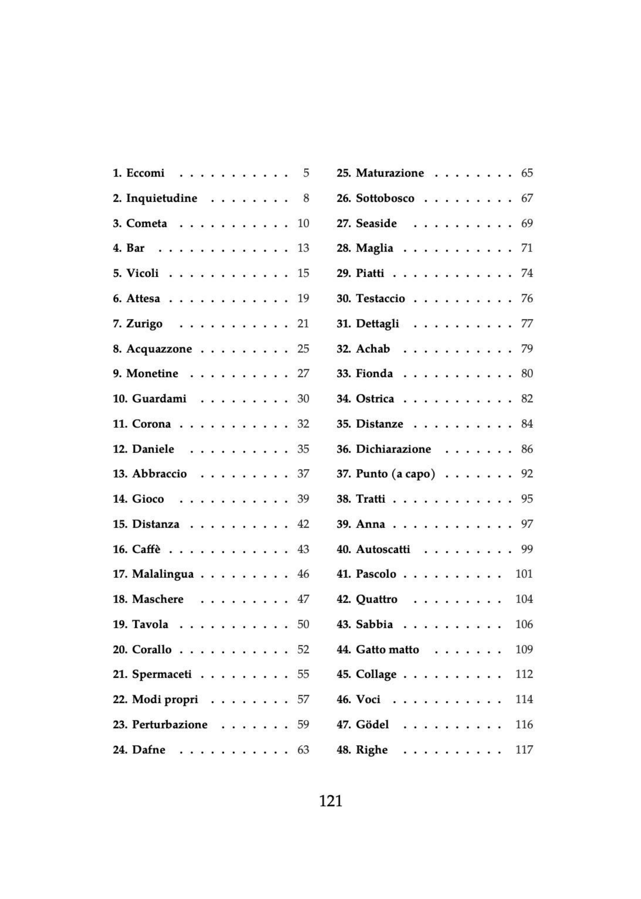

[main]mg|pages

marella è quasi un diario e più certamente lo spazio di un gioco, del miscuglio di regole, fatti e caso tra la terra e il cielo, procedendo con la dinamica incerta del sasso. Tra i due poli c'è uno scorcio su una vita intera. Quella di una donna, del suo mettersi in gioco una mossa per volta. Anna è sua madre scomparsa da poco, Anna sua figlia appena arrivata, poi c'è Daniele, il suo compagno attuale e il padre di Anna. La triangolazione di questi centri fissa un punto su una mappa fatta di tutti gli altri nomi, di citazioni, di cose del mondo e del loro senso, della maternità, dell'amore e della scrittura di tutto questo. I numeri, loro, scandiscono il tempo di questo viaggio che procede per gioco, bordeggiando tra riflessioni e vicende di una relazione amorosa. Marelle è il nome francese del gioco della campana.
In vendita su lulu.com ⋅ Instagram ⋅ Facebook
Quarta di copertina

25. Maturazione
29. Piatti (foto da una vecchia versione, numerata diversamente)

L'indice
